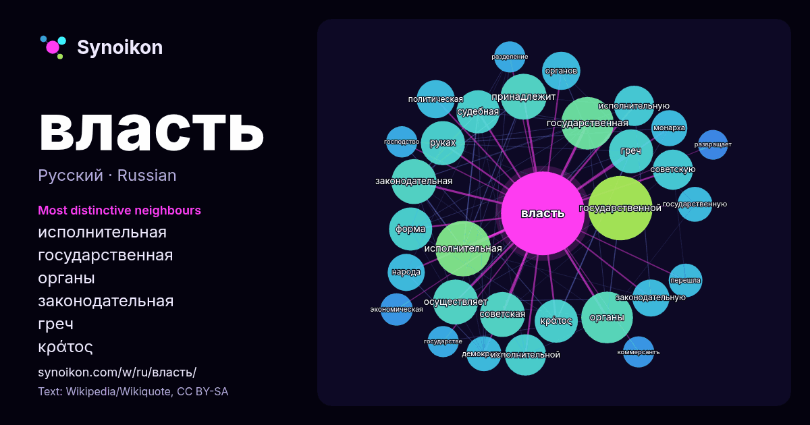

Русский · популярное слово
власть
“power” · Слова вокруг него в 1361 вхождениях из Википедии, Wikiquote.

Самые характерные соседи
- исполнительная 39×
- государственная 28×
- органы 27×
- законодательная 26×
- греч 24×
- κράτος 24×
- судебная 23×
- государственной 23×
- осуществляет 23×
- исполнительную 21×
- исполнительной 20×
- руках 19×
- советскую 19×
- советская 19×
- принадлежит 18×
- законодательную 18×
- форма 16×
- монарха 16×
- демократия 15×
- политическая 14×
× = во сколько раз чаще, чем в обычном тексте Википедии.
Самые частые соседи
- государственной 51
- исполнительная 38
- государственная 34
- органы 33
- является 32
- принадлежит 26
- законодательная 25
- осуществляет 25
- советская 25
- греч 24
- руках 24
- κράτος 23
- судебная 23
- форма 23
- исполнительной 21
- области 21
- исполнительную 20
- советскую 20
- государства 18
- общества 18
В контексте
- элементом политической власти является государство и система государственных органов, реализующих государственную власть. Власть выступает как объектом Wikipedia snippets · Власть
- Суверенная власть (латыш: Suverēnā vara, SV) — политическая партия Латвии, название которой восходит к цитате из второй статьи Конституции страны: «Суверенная Wikipedia snippets · Суверенная власть
- Исполни́тельная власть — одна из ветвей власти в государстве, представляющая собой совокупность органов для реализации целей и задач государственной политики Wikipedia snippets · Исполнительная власть
- частным случаем символической власти. Исполнительная власть Судебная власть Представительная демократия Разделение властей Федеральное собрание Парламенты Wikipedia snippets · Законодательная власть
- Полити́ческая власть, или госуда́рственная власть (власть госуда́рственная, или полити́ческая) — способность одного человека или группы лиц контролировать Wikipedia snippets · Политическая власть
- Суде́бная власть — выделяемая в соответствии с принципом разделения властей самостоятельная и независимая ветвь государственной власти, действующая для Wikipedia snippets · Судебная власть
- «Пя́тая власть» (англ. The Fifth Estate) — американо-бельгийский биографический триллер режиссёра Билла Кондона и сценариста Джоша Сингера, посвящённый Wikipedia snippets · Пятая власть
- «Власть луны» или «Очарованные луной» (англ. Moonstruck — «Помешанные») — мелодрама режиссёра Нормана Джуисона, снятая в 1987 году. Фильм удостоен «Серебряного Wikipedia snippets · Власть луны
Другие слова
- бог
- вода
- деньги
- жизнь
- здоровье
- золото
- искусство
- истина
- история
- климат
- кошка
- мост
- наука
- пища
- поезд
- природа
- работа
- семья
- сердце
- смерть
- собака
- язык
Предварительно рассчитано 2026-10-09 с настройками по умолчанию (±5 слов, средний корпус). Интерактивная карта может обновить данные в реальном времени.
Интерфейс переведён машинно; исправления приветствуются.